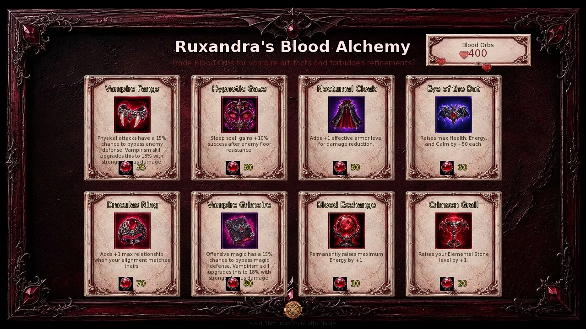
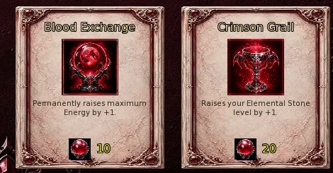
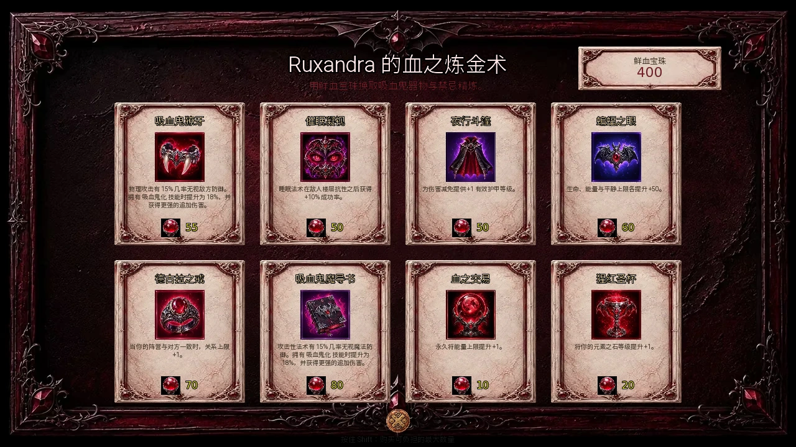
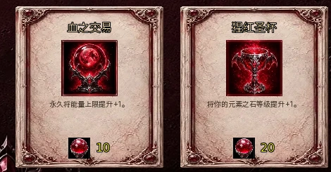

Select a screenshot to enlarge it. Screens show example inventories and progress.
Blood Orbs into permanent upgrades
Ruxandra’s Blood Alchemy exchanges Blood Orbs for six permanent artifacts and two repeatable refinements. Find it in the Vampire Laboratory inside the Vampire Lair. Opening and using the shop take no in-game time.
You need effective Vampire 25 or higher to open Blood Alchemy. Applicable Vampire modifiers count. No particular relationship stage or personal-scene completion is required, and the Vampirism skill is optional: it improves two artifacts’ effects rather than unlocking the shop.
Bring unconsumed Blood Orbs. Wealth, Crystals and Dragon Coins do not pay the listed prices. The six unique artifacts together cost 365 Blood Orbs; repeatable upgrades use the same balance.
Reaching the laboratory
Ruxandra is in the laboratory all day. Enter the Vampire Lair, go to the Vampire Laboratory, then choose Blood Alchemy from the location actions.
| Route | How it opens |
|---|---|
| Normal dungeon | Reach floor 23 and enter its Castle tile. This entrance does not require story beat 61. |
| City Library shortcut | After story beat 61: Present → Uptown → City Library (Uptown) → Library Basement → Dark Corridor → Vampire Lair → Vampire Laboratory. |
The City Library normally opens 08:00–22:00; a temporary story closure can also prevent entry. From Downtown, the metro’s Travel to Uptown action takes 30 minutes, then use the Uptown map’s Library icon. Once inside the library, the basement-to-laboratory travel actions take no time.
The lair’s Return to Dungeon portal returns you to the crawl. Its travel access and Ruxandra’s personal scenes have their own conditions; neither replaces the shop’s Vampire requirement.
Save or consume your Blood Orbs?
A Blood Orb has two distinct uses. Using one in inventory consumes it, adds +1 base Vampire up to 999, and restores current Health, Energy, Calm and Satiation to their maxima. Spending one in Blood Alchemy pays for a purchase instead. An orb you have consumed cannot also fund the shop.
On dungeon floors 21–25, eligible vampire and blood enemies have a 15% base Blood Orb chance; specified guaranteed drops bypass the roll. Applicable loot bonuses can improve the chance. This is separate from the pickaxe roll, so a pickaxe does not replace the orb chance.
Other dungeon encounters and rewards can provide Orbs. One goblin encounter trades one Blood Orb for five Dragon Coins. The Phantom Stone–Thieves Gloves extra reward can also select a Blood Orb. None of these makes an Orb guaranteed on every visit.
Buying from the shop
- Meet effective Vampire 25 and carry enough Blood Orbs.
- Open Blood Alchemy and inspect each card’s effect and price.
- Select the artifact picture or its purchase control. Purchases commit immediately, and the balance updates.
- Close the shop with its X when finished.
A unique artifact becomes greyed out and marked OWNED after purchase. Unaffordable controls are disabled. Crimson Grail is hidden until you own Elemental Stone.
For Blood Exchange and Crimson Grail, hold Shift to quote the maximum affordable quantity and read the total price before buying. Ordinary purchase controls also support holding to repeat. These controls can spend a large stockpile quickly; check the shown quantity when splitting Orbs between upgrades.
The six permanent artifacts
All six are passive Key Items. Ownership applies their effects without an equipment-slot assignment or repeated consumption.
| Artifact | Blood Orbs | Effect |
|---|---|---|
| Vampire Fangs | 55 | Attack, Quick Attack, Stormslash and Power Strike have a 15% chance to bypass normal enemy defenses and add Vampire-based damage. Vampirism raises this to 18% and strengthens the damage roll. |
| Hypnotic Gaze | 50 | Improves Sleep Magic success; see the probability details below. It does not teach the spell. |
| Nocturnal Cloak | 50 | +1 effective armor level for damage reduction. Stacks with your main armor and other passive armor bonuses. |
| Eye of the Bat | 60 | +50 maximum Health, +50 maximum Energy and +50 maximum Calm. No maximum Satiation increase. |
| Draculas Ring | 70 | +1 to the maximum relationship-reward roll when your active alignment matches the NPC’s. It does not raise the minimum or remove mismatch penalties. |
| Vampire Grimoire | 80 | Offensive Fire, Ice, Light and Dark Magic have a 15% chance to bypass normal magic defenses and add Vampire-based damage. Vampirism raises this to 18% with a stronger damage roll. |
Already-owned artifacts cannot be bought again. Draculas Ring’s relationship effect requires a matching active alignment; it does not apply while you are Unaligned.
Vampire damage and Sleep Magic details
Fangs and Grimoire normally roll bonus damage from 1 to effective Vampire. With Vampirism, the bonus rolls from 10 to one-and-a-half times effective Vampire, rounded down, with an upper bound of at least 10. These are chance effects and do not guarantee that every action hits or defeats an enemy.
Hypnotic Gaze adds 10 percentage points to ordinary Sleep success after floor resistance, and raises the ordinary cap from 70% to 75% before other applicable modifiers. In boss fights it raises the base chance from 13% to 20%. Sleep Spores, skills, resistance and the temporary penalty after previous Sleep can still affect the result; some encounters prevent Sleep entirely.

Repeatable refinements
| Refinement | Blood Orbs each | Requirement | Result |
|---|---|---|---|
| Blood Exchange | 10 | Effective Vampire 25+ | Permanent +1 maximum Energy per purchase. |
| Crimson Grail | 20 | Effective Vampire 25+ and owned Elemental Stone | +1 Elemental Stone level per purchase. |
There is no shop-imposed daily limit or upgrade-level cap on these refinements. Blood Exchange increases capacity; it does not refill Energy or raise Vampire. Crimson Grail upgrades the stone you already own, rather than granting a new one.
For comparison, Eye of the Bat gives +50 Energy capacity and two other +50 maxima for 60 Orbs, while Blood Exchange costs 10 Orbs per Energy point. Choose the unique artifacts you want before committing a large amount to repeatable upgrades. A spell-focused character may instead value Elemental Stone levels, while a physical build may prioritize Fangs.

If a purchase is missing or disabled
- Blood Alchemy is absent: enter the Vampire Laboratory and check effective Vampire 25, including modifiers.
- An artifact is disabled: check the carried Orb balance and whether the item is already owned.
- Crimson Grail is absent: collect Elemental Stone first.
- Orbs ran out: inventory use, ordinary purchases and bulk purchases all spend from the same stock.
- A skill did not appear: the artifacts enhance effects; buying Gaze does not teach Sleep Magic, and buying Fangs or Grimoire does not teach Vampirism.
用鲜血宝珠换永久升级
Ruxandra 的血液炼金位于吸血鬼巢穴内的吸血鬼实验室，可用鲜血宝珠购买六件永久物品与两项可重复强化。打开商店和购买都不推进游戏时间。
进入「血液炼金」需要有效吸血鬼属性至少 25，适用的属性修正也计入。商店不要求特定关系阶段或个人剧情完成；吸血鬼化技能会增强其中两件物品的效果，但不是购物前置。
请准备尚未使用的鲜血宝珠。财富、水晶或龙币不能支付这里的价格。六件一次性物品合计 365 鲜血宝珠，重复强化也从同一份库存扣除。
如何前往实验室
Ruxandra 全天在实验室。进入吸血鬼巢穴后，前往吸血鬼实验室，再从地点行动中选择血液炼金。
| 路线 | 开放条件 |
|---|---|
| 普通地下城 | 到达第23层并进入城堡格子；这条入口不要求完成主线第61段。 |
| 城市图书馆捷径 | 主线第61段后：现代 → 上城区 → 城市图书馆（上城区）→ 图书馆地下室 → 黑暗走廊 → 吸血鬼巢穴 → 吸血鬼实验室。 |
城市图书馆通常在08:00–22:00开放，剧情中的暂时关闭也可能阻止进入。从市中心出发，可在地铁站选择「前往上城区」，耗时30分钟，再使用上城区地图的图书馆图标。进入图书馆后，通往实验室的地下移动行动不耗时。
巢穴的返回地下城传送门会把你送回探索区域。地点入口与 Ruxandra 的个人剧情各有条件，都不能代替商店本身的吸血鬼属性要求。
鲜血宝珠该使用还是留着？
同一颗鲜血宝珠有两种不同用途。在背包中使用会消耗一颗，使基础吸血鬼属性 +1，最高999，并将当前生命、精力、镇定和饱腹感（部分界面显示「饱腹度」）恢复至上限。在血液炼金中支付则会换来对应商品。已经使用的宝珠不能再拿去购物。
地下城21–25层中，符合条件的吸血鬼与鲜血敌人有15%基础概率掉落鲜血宝珠，指定必掉敌人则直接发放。适用的战利品加成可提高概率。这与镐的掉落分别判定，掉了镐不代表宝珠机会就被替代。
其他地下城遭遇与奖励也能提供宝珠。其中一个哥布林遭遇可用5龙币换1鲜血宝珠；幻影之石与盗贼手套的额外奖励池也包含宝珠。但并非每次探索都会保证遇到这些来源。
商店怎么用
- 让有效吸血鬼属性达到25，并带足鲜血宝珠。
- 打开血液炼金，查看卡片上的效果与价格。
- 点击物品图片或购买控件。购买立即生效，余额随即更新。
- 购买完后用商店的X关闭。
已买的一次性物品会变灰并标记为已拥有；余额不足的购买控件不可用。猩红圣杯要等拥有元素之石后才会显示。
血之交易与猩红圣杯支持按住Shift查看最大可购买数量，请先看清数量与合计价格。普通购买控件也支持按住连续购买，可能很快花掉大量库存；想分配到多个用途时，应留意当前报价。
六件永久物品
六件商品都是持有即生效的被动关键物品，无须占用装备栏，也不用反复消耗。
| 物品 | 鲜血宝珠 | 效果 |
|---|---|---|
| 吸血鬼獠牙 | 55 | 攻击、快速攻击、风暴斩与强力打击有15%概率绕过普通敌方防御，并增加基于吸血鬼属性的伤害。持有吸血鬼化技能后为18%，额外伤害掷值也更强。 |
| 催眠凝视 | 50 | 提高催眠魔法成功率，详见下方概率说明；不会直接教会该法术。 |
| 夜行斗篷 | 50 | 减伤计算中的有效护甲等级+1，可与主护甲及其他被动护甲加成叠加。 |
| 蝙蝠之眼 | 60 | 最大生命、最大精力、最大镇定各+50，不增加最大饱腹感。 |
| 德古拉之戒 | 70 | 当前生效阵营与角色一致时，关系奖励掷值上限+1；不提高下限，也不消除阵营不合的惩罚。 |
| 吸血鬼魔导书 | 80 | 攻击性的火焰、冰霜、光明与黑暗魔法有15%概率绕过普通魔法防御，并增加基于吸血鬼属性的伤害。吸血鬼化技能使概率升至18%，额外伤害掷值也更强。 |
已拥有的永久物品不能重复购买。德古拉之戒需要当前生效的阵营相合，处于无阵营状态时不会触发这项加成。
吸血鬼额外伤害与催眠魔法概率
獠牙和魔导书通常从1到有效吸血鬼属性之间掷出额外伤害；有吸血鬼化技能时，改为从10到有效属性的1.5倍向下取整，上限至少为10。这些都是概率效果，不保证每次行动都能命中或击败敌人。
催眠凝视在普通催眠判定扣除楼层抗性后增加10个百分点，并将其他适用修正前的普通上限由70%提高至75%。首领战中的基础成功率则由13%提高至20%。沉睡孢子、技能、抗性与前一次催眠后的临时惩罚仍可能影响结果，部分遭遇会完全禁止催眠。

两项可重复强化
| 强化 | 每次鲜血宝珠 | 条件 | 效果 |
|---|---|---|---|
| 血之交易 | 10 | 有效吸血鬼属性25以上 | 每次永久增加1点最大精力。 |
| 猩红圣杯 | 20 | 有效吸血鬼属性25以上，且持有元素之石 | 每次使元素之石提高1级。 |
商店没有为这两项强化设置每日次数或升级等级上限。血之交易提高的是容量，不会补满精力或提高吸血鬼属性；猩红圣杯强化已有的元素之石，不会给予一枚新石头。
可作比较：蝙蝠之眼花60宝珠便能增加50最大精力，并提高另外两种容量；血之交易则是每10宝珠换1点精力容量。大量购买重复强化前，可先决定想要哪些永久物品。常用魔法的角色也可能更重视元素之石等级，近战角色则可考虑獠牙。

找不到商品或无法购买时
- 没有血液炼金行动：确认人在吸血鬼实验室，并检查包含修正在内的有效吸血鬼属性是否达到25。
- 永久物品不可点击：检查随身宝珠是否足够，以及是否已经拥有。
- 没有猩红圣杯：先收集元素之石。
- 宝珠不足：背包使用、单次购买和批量购买消耗的都是同一份库存。
- 没有学到技能：商品增强的是效果；催眠凝视不会教会催眠魔法，獠牙与魔导书也不会教会吸血鬼化。
Adapted and updated from the community Chronoromancer Wiki. Community source and history · CC BY-SA 4.0. Game images © Chronoromancer Studio.